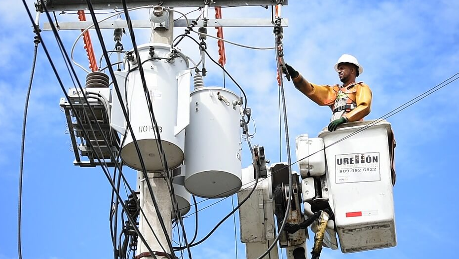
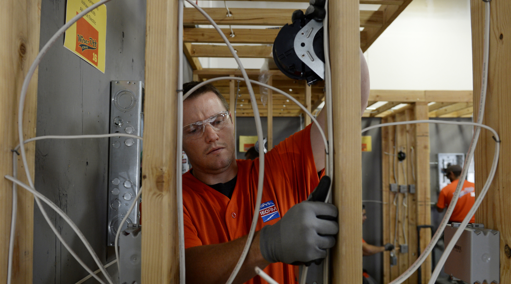

📞Contact US
Get in Touch with the Copperhead Electric Team
Whether you have questions about an upcoming project,
need urgent service, or just want to learn more about what we offer,
we’re here to help. Reach out to any of our licensed electricians directly
or fill out our contact form and we’ll get back to you as soon as possible.
Meet Our Electrians
⚡ Jake Walker – Senior Electrician
With over 18 years of hands-on experience,
Jake is a master of everything from panel
upgrades to complex troubleshooting. Known
for his attention to detail and calm under
pressure, Jake leads the Copperhead crew with
quiet confidence and expert precision.
📞 Phone: (555) 014-8873
✉️ Email: jake@copperheadelectric.com

⚡ Bill Sparks – Residential Specialist
Bill brings 12 years of residential electrical
expertise to the team. Whether it’s rewiring a
historic home or setting up smart systems in a new
build, Bill’s known for his clean work and client-first
attitude. If it runs on power and lives in a home,
Bill’s got it covered.
📞 Phone: (555) 067-4321
✉️ Email: Bill@copperheadelectric.com

⚡ Marcus Dalton – Commercial & Industrial Technician
Marcus has spent the last 15 years wiring everything from retail
spaces to machine shops. A strategic thinker with deep technical
know-how, Marcus is your go-to for larger scale jobs, code compliance,
and high-voltage systems.
📞 Phone: (555) 092-2214
✉️ Email: marcus@copperheadelectric.com

📍 Service Area: Owensboro, KY and surrounding communities
🕒 Hours: Monday–Friday, 8 AM – 6 PM
📬 Request a quote or schedule a consultation today.